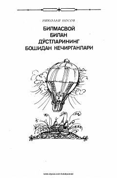

BBMittilar shaharchasida yashovchi Bilmasvoy va uning doʻstlarining qiziqarli sarguzashtlari.
Ushbu asar Mittilar shaharchasida yashovchi qiziqchilar va xususan, hech narsani bilmaydigan, ammo sarguzashtlarni yoqtiradigan Bilmasvoy hamda uning doʻstlarining boshidan kechirgan qiziqarli voqealari haqida hikoya qiladi. Kitobda mittilarning hayoti, ularning oʻziga xos turmush tarzi va sarguzashtlari bolalarbop tilda tasvirlangan.